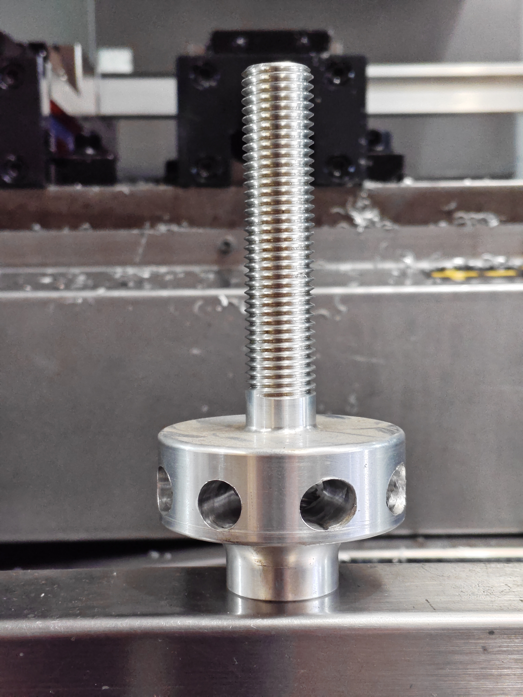

Precision Component Manufacturing
CNC Operation & Process Optimization

Fusion 360 CAD/CAM
G-Code Programming
Safety Protocol
Core Responsibilities
My role focuses on the end-to-end manufacturing of precision components, from interpreting the initial engineering drawing to the final inspection of the machined part.
- Machine Setup: I perform complete setup operations on CNC Lathes, including jaw boring, establishing work offsets (G54), and setting tool geometry offsets to ensure the first part is correct.
- Technical Interpretation: I interpret complex 2D technical drawings, analyzing geometric tolerances (GD&T) to determine the most efficient machining strategy.
- Programming (G-Code & Fusion 360): For standard parts, I write and edit G-code programs manually at the controller. For complex geometries, I use Fusion 360 to draft the model and generate CAM toolpaths.
- Safety & Operation: I operate heavy machinery in strict adherence to OH&S safety protocols, ensuring a hazard-free workshop environment while maintaining production targets.
The Finished Part
Below is an example of a completed component, machined to specification with a high-quality surface finish.
Back to Home